MOBILE · SOCIAL + WEB3 · iOS
Tietly: соцсеть и крипто-кошелёк в одном приложении
Мобильная платформа, где можно знакомиться на событиях, общаться и управлять цифровыми активами. Спроектировал продукт от идеи до более чем 100 экранов.
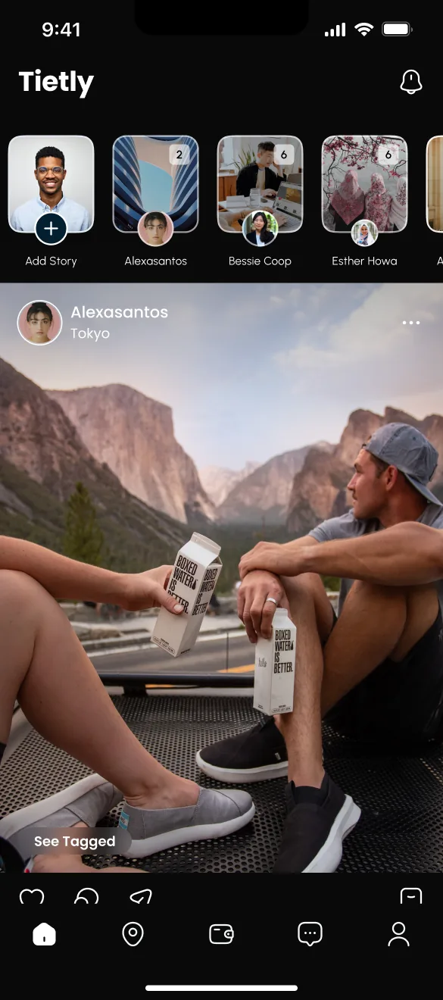
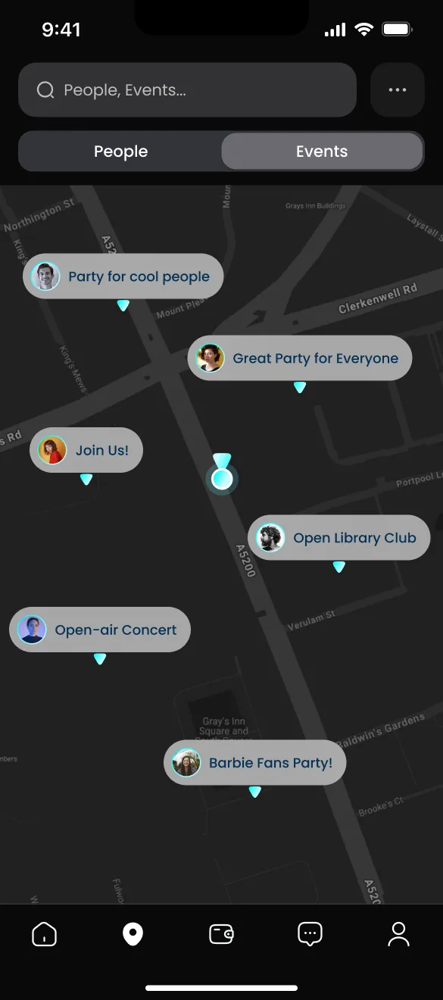
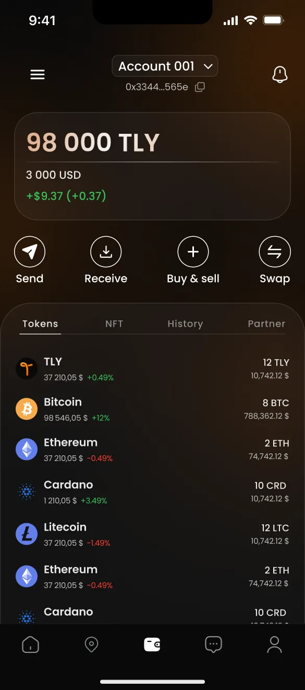
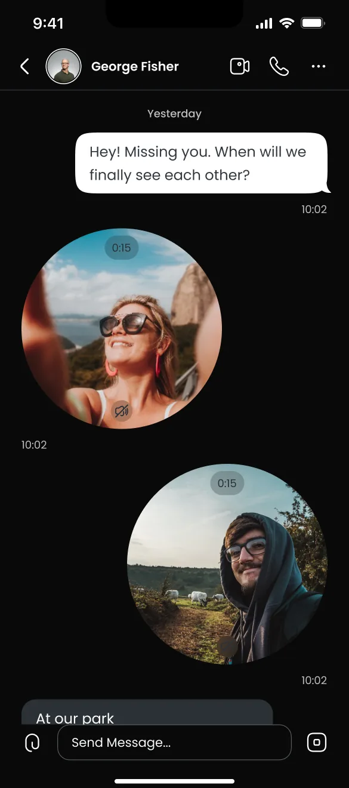
МОЯ РОЛЬ
Я проектировал продукт от идеи до более чем 100 экранов: продуктовую логику, UX и UI, дизайн-систему, прототипы и материалы для питча. Главная задача: сделать социальную часть и кошелёк одним продуктом.
КОРОТКО О КЕЙСЕ
Tietly - платформа, которая соединяет социальное взаимодействие и блокчейн. Пользователь знакомится и ходит на события, общается в чатах и группах, а в том же приложении покупает, продаёт и обменивает криптовалюту и управляет NFT. Задача дизайна: сделать два мира одним понятным продуктом.
Соцсеть, где знакомятся на событиях
Переезд в новый город - вызов: трудно находить события и людей. Tietly объединяет общение, события и кошелёк в одном приложении.
Три опоры продукта
Каждая опора отвечает на свою потребность и усиливает остальные.
Карта пользователей, поиск людей по интересам, создание событий и приглашения.
Приватность под контролем пользователя.
Личные и групповые чаты, звонки, голосовые и видеосообщения, группы с токенами.
Одно приложение вместо двух.
Покупка, продажа и обмен криптовалют, хранение NFT, история операций.
Кошелёк - полноценный раздел навигации.
Восемь решений в одном блоке
От регистрации до операций с токенами: что я сделал на каждом экране.
Один экран - одна задача, а занятый никнейм сразу получает свободные варианты.
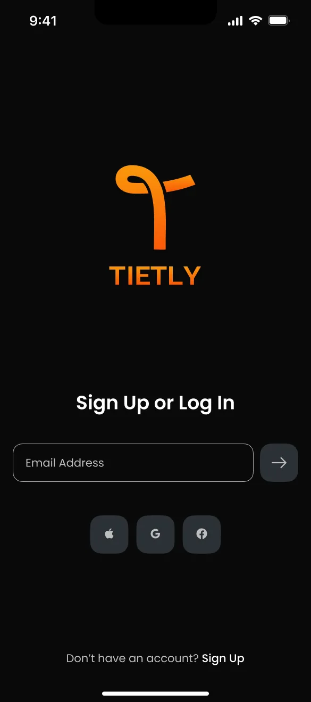
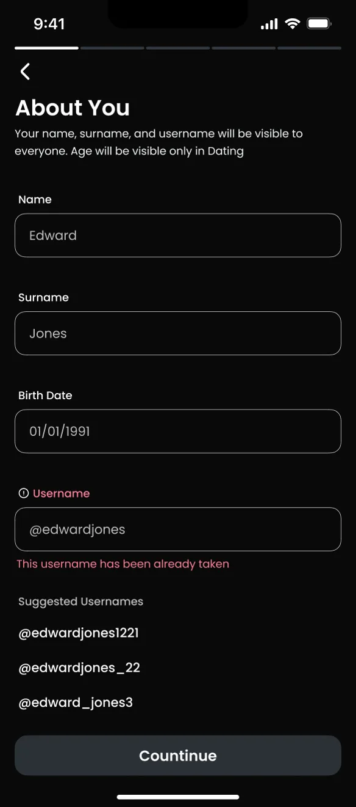
Истории сверху, события в профиле, ответ на историю прямо из просмотра.
Переключатель «Люди / События», фильтры и приватность в основном меню.
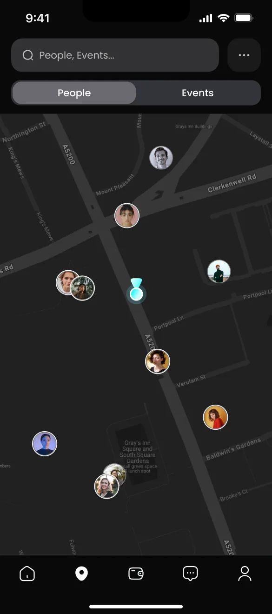
Страница события с кнопкой «Присоединиться» и простое создание для организатора.
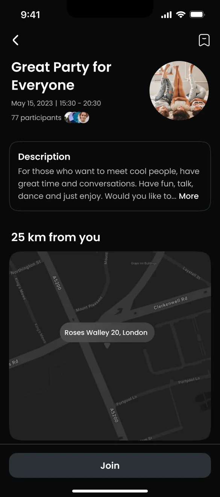
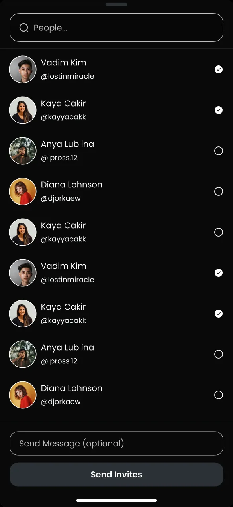
Привычный мессенджер, «Совпадения», видеосообщения в круге и голосовые одним жестом.
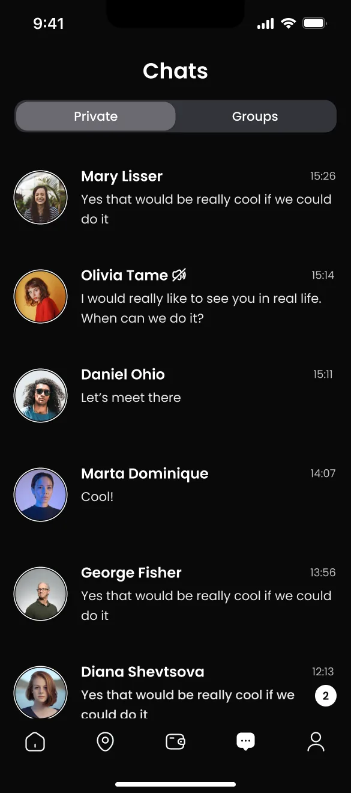
Баланс в токенах и долларах, четыре главные операции под ним, история и партнёрка.
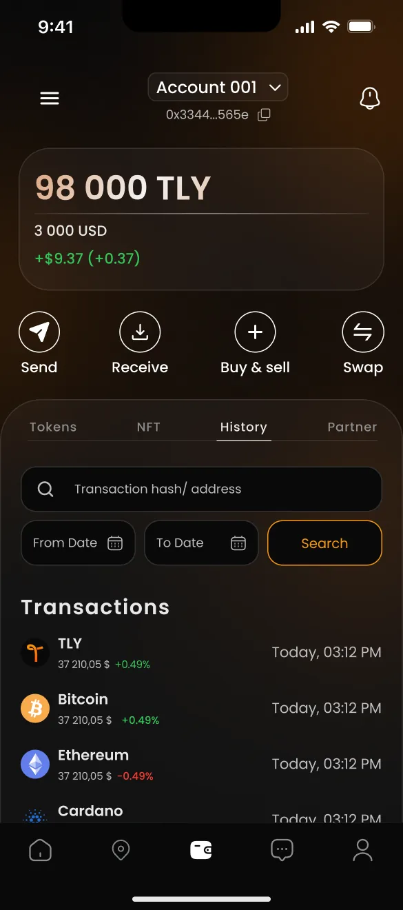
Сетка карточек с ценой и действием, технические данные ниже.
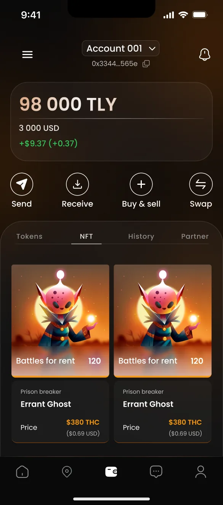
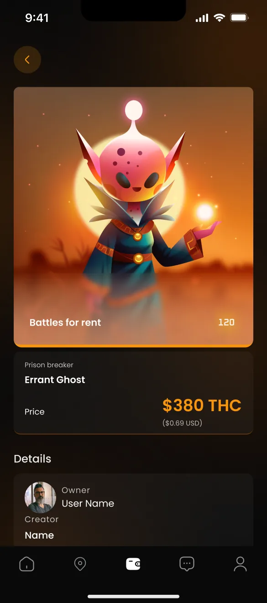
Крупная сумма, комиссии до подтверждения и единый паттерн «ввод - подтверждение - результат».
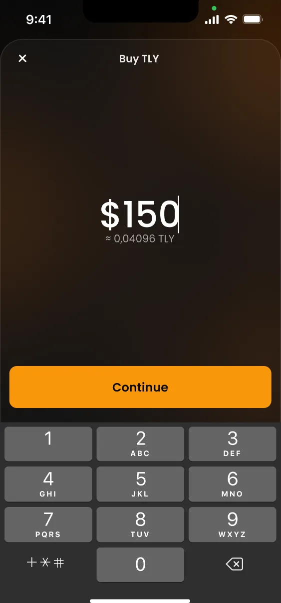
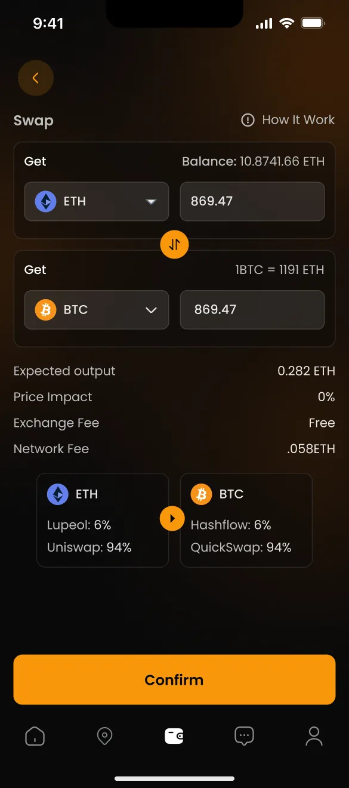
Что получилось
Единое приложение, в котором социальная жизнь и крипто-кошелёк работают как один продукт: от знакомства на событии до первой транзакции.
Что я вынес из проекта
Социальные и финансовые сценарии стоит отделять визуально, но связывать общей навигацией и единым профилем: так пользователь не теряется в сложном продукте.
Чёрный фон и оранжевый акцент (#FF7700) для социальной части, тёплый градиент для кошелька, зелёный только для успешных состояний.
Шесть источников дохода: подписки, микроплатежи, комиссии, реклама, NFT и токен Tietly Coin. Каждый имеет свой экран или сценарий.
Реализованы регистрация, профили, посты и комментарии. В разработке: AR, оптимизация и AI-модерация. Роадмап 2025: кошелёк и запуск токена, масштабирование, затем AR и аватары.
Другие проекты
Можете ознакомиться с моими другими проектами